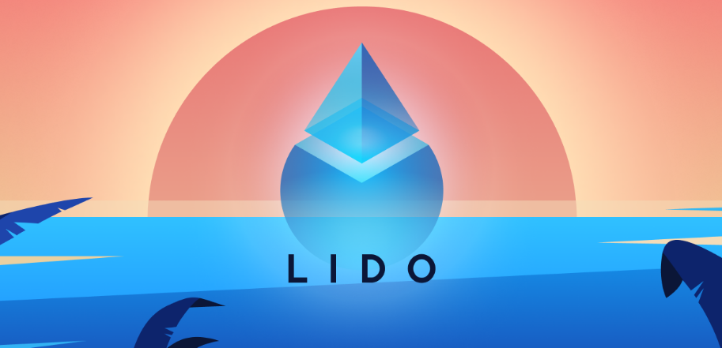

Lido staking is a decentralized finance (DeFi) project that focuseson Ethereum 2.0 staking. Ethereum 2.0, also known as ETH 2.0 or Serenity, is anupgrade to the Ethereum network that aims to transition from a proof-of-work(PoW) consensus mechanism to proof-of-stake (PoS). Staking involves locking upa certain amount of cryptocurrency to support network operations and earnrewards in return.
It's important to conduct thorough research and understandthe risks associated with any DeFi project, including Lido. While Lido aims toprovide a convenient way to stake ETH and earn rewards, there are stillpotential risks related to smart contracts, network security, and marketvolatility. Always use trusted sources and exercise caution when participatingin DeFi projects.
Creating a Lido staking position involves interacting withthe Lido protocol to deposit your Ethereum (ETH) and receive stETH tokens inreturn. stETH tokens represent your staking position and the rewards generatedby the ETH you've staked. Here's a step-by-step guide on how to create a Lidostaking position:
Prerequisites:
1. You should have an Ethereum wallet set up with some ETHin it.
2. Ensure you have access to a web3-enabled wallet likeMetaMask, Trust Wallet, or MyEtherWallet.
1. Visit the Lido Staking Website:
- Open your webbrowser and go to the official Lido Staking website
2. Connect Your Wallet: - Click on the"Connect Wallet" or similar button on the website. - Select andconnect your Ethereum wallet to the Lido interface.
3. Deposit ETH: - Once your walletis connected, you'll see an option to deposit ETH. - Enter the amountof ETH you want to stake with Lido.
4. Confirm the Transaction: - Review thetransaction details and confirm the deposit through your wallet's interface. - This transactionwill send your ETH to the Lido smart contract and mint an equivalent amount ofstETH tokens, representing your staked ETH.
5. Receive stETH Tokens: - After thetransaction is confirmed, you'll receive stETH tokens in your wallet. - These stETHtokens represent your staking position, and they will automatically accruerewards as the Ethereum 2.0 network generates them.
6. Monitor Your staking Position: - You can keeptrack of your staking rewards and staking position through the Lido Staking interface or your wallet. - Lido may offeradditional features, such as options to unstake, claim rewards, or participatein governance.
7. Withdraw or Manage Your stETH Tokens: - If you decide toexit your Lido staking position, you can do so by interacting with the Lidoprotocol. - Follow theinstructions on the Lido Finance platform to withdraw your stETH tokens orperform other actions.
8. Stay Informed: - Stay updated withLido's announcements and developments to ensure you are aware of any changes ornew features in the protocol.
It's crucial to understand that staking in DeFi protocolslike Lido carries inherent risks, including smart contract vulnerabilities andmarket fluctuations. Always do your research, only invest what you can affordto lose, and use reputable sources to access the Lido platform.Additionally,the Lido protocol may have evolved since my last update in September 2021, sorefer to their official documentation and announcements for the most currentinformation and instructions.
Lido Staking is a decentralized protocol that allows you tostake your Ethereum (ETH) and receive stETH tokens in return. Lido is typicallyavailable on the Ethereumblockchain, and you can participate in Lido staking byfollowing these general steps:
1. Prerequisites: - Ensure you havean Ethereum wallet with some ETH in it. - You'll needaccess to a web3-enabled wallet like MetaMask, Trust Wallet, or MyEtherWallet.
2. Access the Lido Finance Website: - Open your webbrowser and go to the official Lido Staking.
3. Connect Your Wallet: - Click on the"Connect Wallet" or a similar option on the Lido Staking website. - Select andconnect your Ethereum wallet to the Lido interface.
4. Deposit ETH for Staking: - After connectingyour wallet, you should see an option to deposit ETH for staking. - Enter the amountof ETH you want to stake with Lido.
5. Confirm the Transaction: - Review thetransaction details and confirm the deposit through your wallet's interface. - This transactionwill send your ETH to the Lido smart contract and mint an equivalent amount ofstETH tokens, representing your staked ETH and its rewards.
6. Receive stETH Tokens: - Once thetransaction is confirmed, you will receive stETH tokens in your wallet. - stETH tokensrepresent your staking position and will accrue rewards from Ethereum 2.0staking.
7. Monitor Your Staking Position: - You can trackyour staking rewards and staking position through the Lido Finance interface oryour wallet. - Lido may offeradditional features such as options to unstake, claim rewards, or participatein governance.
8. Withdraw or Manage Your stETH Tokens: - If you decide toexit your Lido staking position or manage your stETH tokens, you can do sothrough the Lido protocol. - Follow theinstructions provided on the Lido Finance platform to withdraw your stETHtokens or perform other actions.
9. Stay Informed: - Keep yourself updated with Lido'sannouncements and developments to be aware of any changes or new featureswithin the protocol.
Please note that DeFi protocols like Lido come with inherentrisks, including smart contract vulnerabilities and market fluctuations. Alwaysconduct thorough research, only invest what you can afford to lose, and usereputable sources to access the Lido platform. Additionally, the Lido protocolmay have evolved since my last update in September 2021, so consult theirofficial documentation and announcements for the most current information andinstructions on using Lido staking.
To take actions in Lido staking, such as depositing Ethereum(ETH), managing your staked assets, and interacting with the Lido protocol,you'll need to connect your Ethereum wallet to the Lido Finance platform. Hereare the key actions you can take in Lido staking:
1. Connect Your Wallet:
Visit theofficial Lido Staking. - Click on the"Connect Wallet" or similar button on the website. - Select andconnect your Ethereum wallet (e.g., MetaMask, Trust Wallet, MyEtherWallet).
2. Deposit ETH for Staking:
After connectingyour wallet, you should see an option to deposit ETH for staking. - Enter the amountof ETH you want to stake with Lido. - Confirm thetransaction through your wallet's interface. - This transactionwill send your ETH to the Lido smart contract and mint an equivalent amount ofstETH tokens, representing your staked ETH and its rewards.
3. Monitor Your Staking Position:
You can trackyour staking rewards and staking position through the Lido Finance interface oryour wallet. - Lido may offeradditional features, such as options to unstake, claim rewards, or participatein governance. Be sure to explore the platform to access these features.
4. Withdraw or Manage Your stETH Tokens:
If you decide toexit your Lido staking position or manage your stETH tokens, you can do sothrough the Lido protocol. - Follow theinstructions provided on the Lido Finance platform to withdraw your stETHtokens or perform other actions.
5. Participate in Governance (if available):
If Lido has agovernance system and a governance token (e.g., LDO), you can participate indecision-making by voting on proposals related to the protocol's developmentand parameters.
6. Stay Informed:
Keep yourselfupdated with Lido's announcements and developments to be aware of any changesor new features within the protocol.
Remember that staking in DeFi protocols like Lido carriesinherent risks, including smart contract vulnerabilities and marketfluctuations. Always conduct thorough research, only invest what you can affordto lose, and use reputable sources to access the Lido platform.
Please note that the Lido protocol may have evolved since mylast update in September 2021. Consult their official documentation andannouncements for the most current information and instructions on takingactions within the Lido staking platform.
As of my last knowledge update in September 2021, there isno specific term "STG" associated with Lido staking. Lido Financeprimarily offers staking services for Ethereum (ETH) through its platform. Userscan stake ETH with Lido to participate in Ethereum 2.0 staking and earn rewardsin the form of stETH tokens, which represent their staked ETH and its rewards. It's possible that "STG" could refer to somethingspecific or new related to Lido or Ethereum staking, but without more contextor information, it's challenging to provide a precise explanation.
If"STG" represents a new feature, token, or term related to Lidostaking or Ethereum 2.0, I recommend checking the official Lido Finance website,their documentation, or their official communication channels for the mostup-to-date information and clarification on what "STG" might signifyin the context of Lido staking.